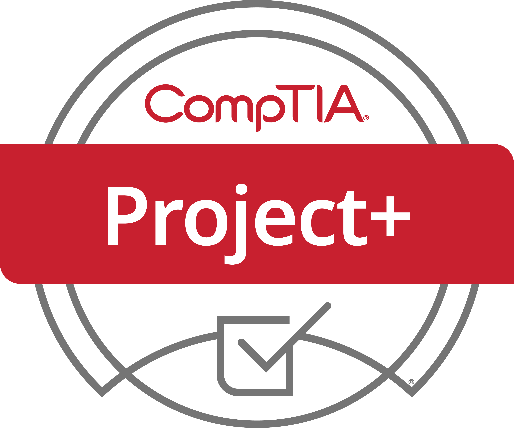

I started my academic journey with an Associate Degree in Information Technology.
After getting my associates, I decided to take a more difficult path and transferred to WGU to pursue a Bachelor's Degree in Software Engineering.
Later on, I am planning on persuing a Master's Degree at Florida Interactive Entertainment Academy.
-
Western Governor's University
B.S. in Software Engineering
2024 – 2026
-
DeVry University
A.S. in Information Technology
2021 – 2023
My first certification was the CompTIA Project+ which helped me understand project management principles and best practices.
Now, I am aiming to get my AWS Certified Solutions Architect certification by February 1st.
-
 Expected Feb 2026
Expected Feb 2026
-

Issued 2024
Independent Projects represents hands-on work building, testing, and deploying full-stack applications using modern web, cloud, and QA technologies.
This includes development across Angular, Spring Boot, databases, AWS infrastructure, CI/CD pipelines, and automated testing.
-
- Designed and delivered multiple full-stack applications across different domains, solving real problems such as user authentication, order processing, and data consistency
- Architected and deployed cloud infrastructure on AWS to ensure high availability, scalability, and secure data access across services
- Built automated testing and CI/CD pipelines to prevent regressions, validate APIs, and maintain production-level quality standards
-
- Led onboarding and technical training for new associates, ensuring accurate use of internal systems and digital tools
- Identified workflow, system, and data issues and worked with leadership to resolve bottlenecks and prevent recurring errors
- Served as a communication bridge between operations and management, improving process quality, reporting, and team performance
These skills were developed through continuous self-learning, hands-on experimentation, and consistent dedication to building real systems. The technologies shown represent a core toolkit, but the ability to learn, adapt, and apply new tools extends far beyond what is listed here.
QA & Testing
automation + API
Playwright
Cypress
Postman
 JSON
Playwright
Cypress
Postman
JSON
JSON
Playwright
Cypress
Postman
JSON